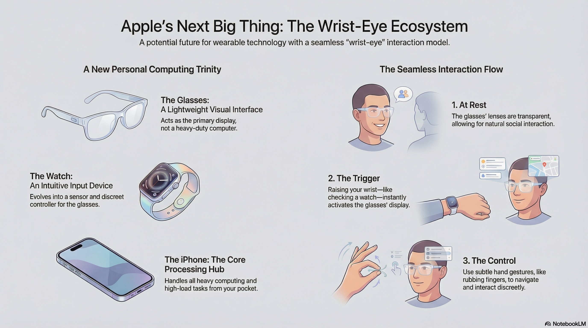
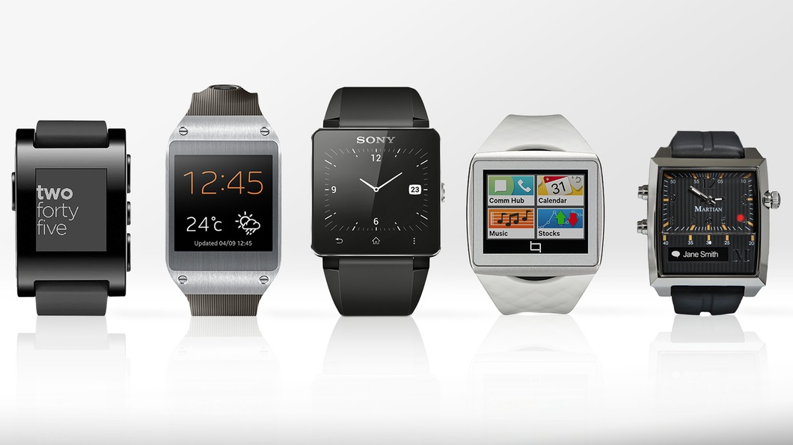

What Should Apple's Upcoming Glasses Be Like?

In the long evolution of smart wearable devices, we have always been searching for the perfect form factor. Years ago, I wrote an article titled "If Apple watch and Google glass work together", imagining a future where the screen on the wrist seamlessly connected with the screen before the eyes. Later, with the emergence of Meta Ray-Ban smart glasses and the Neural Band concept, I further explored the evolution of this interaction in "With Meta Ray-Ban Display Glasses and the Neural Band, Who Still Needs a Smartwatch?".
Now, rumors about Apple's upcoming "Apple Glasses" are rampant. Combining my previous thoughts with existing technical clues—especially the rumor that Apple might use an Apple Watch chip in the glasses—I would like to boldly envision here: What exactly should the upcoming Apple Glasses be like?
Redefining Positioning: The Fourth Major Peripheral for iPhone
First and foremost, Apple Glasses should not be viewed as a "Lite version" of the Vision Pro. The Vision Pro is a standalone terminal for spatial computing, powerful but heavy; the most logical positioning for Apple Glasses should be as another key peripheral for the iPhone, following the Apple Watch and AirPods.
Rumors suggest that Apple Glasses will be equipped with an Apple Watch-level chip. This is not just for power saving, but to clarify its identity. Cramming the massive visionOS into a low-power chip is obviously unrealistic; therefore, Apple Glasses are highly likely to run a lightweight system deeply customized based on watchOS. Its core task is not to independently handle complex spatial computing, but to serve as the First Display Terminal for information.
Interaction Revolution: When "Wrist Lift" Meets "Heads-Up"
I once envisioned a scenario in an old article: "Syncing the Apple Watch display with the Google Glass display."
The ideal interaction method for Apple Glasses is precisely this kind of "Wrist-Eye Synergy."
- Idle State: The glasses act just like ordinary frames with transparent lenses, displaying no distracting information to maintain natural social interaction.
- Viewing Time/Notifications: When you habitually lift your wrist (just like checking an Apple Watch), the glasses' HUD (Head-Up Display) instantly lights up, with the time or notifications floating directly before your eyes. You no longer need to look down at your watch, nor do you need to perform awkward "tapping on glasses" gestures in public.
- Operation: This is where the "Neural Band" concept comes into play. If Apple Glasses are equipped with a wristband similar to the Neural Band, or deeply bound to the existing Apple Watch, the wrist becomes a natural controller.
Imagine keeping your hands naturally at your sides or on a table and slightly rubbing your fingers (via Apple Watch's AssistiveTouch or future electromyography technology) to scroll through menus, answer calls, or reply to messages in front of your eyes. This operation is discreet and elegant.
The Evolution of Privacy and Social Acceptance
One of the major reasons for the failure of Google Glass back in the day was the privacy controversy surrounding the camera. But times have changed. With the popularity of short videos and live streaming, people's sensitivity to portable cameras has dropped significantly.
The current social environment has already psychologically prepared the public for the adoption of Apple Glasses. More importantly, Apple excels at solving computing power issues through its ecosystem. High-load tasks such as video recording and image recognition can be completely offloaded via wireless connection to the iPhone in your pocket (or even the cloud) for processing, while the glasses themselves are responsible only for collection and display.
If you see a person wearing glasses looking into the distance, smiling while quietly making various small movements with their fingers (operating the device), it no longer feels strange.
Conclusion: The Final Piece of the Puzzle
If Apple Glasses are indeed launched as we have envisioned—a lightweight display possessing the "Heart" of an Apple Watch, the "Brain" of an iPhone, and the imperceptible wearing experience of AirPods—it will be a game-changer.
It does not need to replace the iPhone, nor does it need to replace the Apple Watch. On the contrary, it will liberate the Apple Watch from being a "Display Terminal" to becoming a pure "Sensing and Input Terminal," and liberate the iPhone from being a "frequently pulled-out device" to becoming a "Pocket Computing Core."
This might be the true "Apple Glass Moment" we have been waiting for all these years.

If Google Android Wear Watch and Google Glass work together
If Apple watch and Google glass work together
With Meta Ray-Ban Display Glasses and the Neural Band, Who Still Needs a Smartwatch?
-
Bulletin Borad
-
Home
-
other links